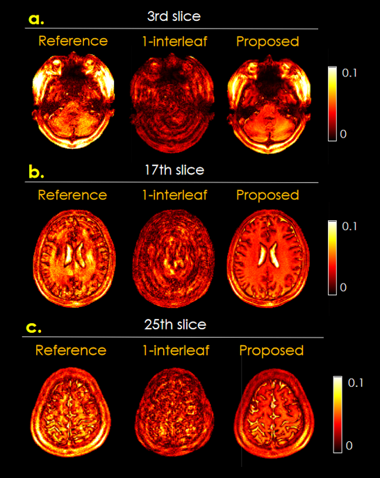
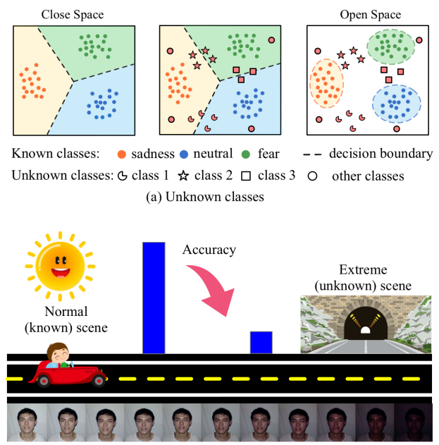

|
Jinghang Tan
I'm currently an undergraduate student (from fall, 2020) in School of
Software ,
Tsinghua University , with a major in Software Engineering and a minor in Statistics.
I will be starting my Ph.D. in Bioengineering at UIUC in the fall of 2024.
My research experience encompasses biomedical imaging, computer vision, and machine learning.
I was fortunate to collaborate with Prof.
Berkin Bilgic
at Harvard Medical School and Prof.
Qiyuan Tian
at Tsinghua University, on self-supervised Magnetic Resonance Imaging parameter estimation methods,
in 2023.
I also closely worked with Prof. Xibin Zhao at Tsinghua
University in 2022, on the topic of open-set facial expression recognition in the wild.
Collaborations, discussions, and chats are welcome!
Contact: tanjx20 [at] mails.tsinghua.edu.cn
|
|
Research
I'm interested in computer vision, biomedical imaging, and their intersection. Recently, I'm working
on self-supervised learning based Magnetic Resonance Fingerprinting (MRF) parameter estimation
method.
I've also worked on transformer based open-set facial expression recognition algorithm.
|
|

|
DAES: Self-Supervised Parameter Estimation Model for
MR Fingerprinting
Jinghang Tan,
Huihui Ye, Mengze Gao, Zihan Li, Qiyuan Tian, Berkin Bilgic
The International Society for Magnetic Resonance in Medicine (ISMRM), 2024
Developed an accurate parameter estimation method named Denoising Auto-encoder Subspace (DAES) for
MR Fingerprinting by combining DAE with subspace modeling.
|
|

|
Variance-Aware Bi-Attention Expression Transformer for Open-Set Facial
Expression Recognition in the Wild
Junjie Zhu, Bingjun Luo, Ao Sun, Jinghang Tan, Yue Gao, Xibin Zhao
ACM MM, 2023
Developed the VBExT (Variance-Aware Bi-Attention Expression Transformer) algorithm for Facial
Expression Recognition.
|
Awards and Honors
- 2023, The Comprehensive Excellence Scholarship
- 2023, second prize in the Tsinghua University Academic Research Advancement Project
- 2022, The Technological Innovation Scholarship
- 2022, second prize in the Tsinghua University Challenge Cup
- 2022, second prize in the Tsinghua University Academic Research Advancement Project
|
Miscellanea
- I served as the minister of competition department in the Student Association for Science and
Technology
in School of Software, Tsinghua Unversity.
We organized many programming competitions for Tsinghua undergraduates,
including the Software Innovation Contest, the Competition of Graph Strategy and THUAI.
- In my spare time, I enjoy swimming, playing badminton, chess and board games.
- I also enjoy playing games from Paradox Interactive.
|
|
{kind=link}